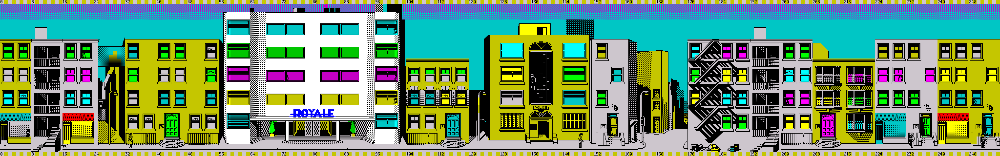

Initial animatory states and locations (mode 4)
Initial animatory states and locations (demo mode)
Initial animatory states and locations (mode 1)
Initial animatory states and locations (mode 2)
Initial animatory states and locations (mode 3)
